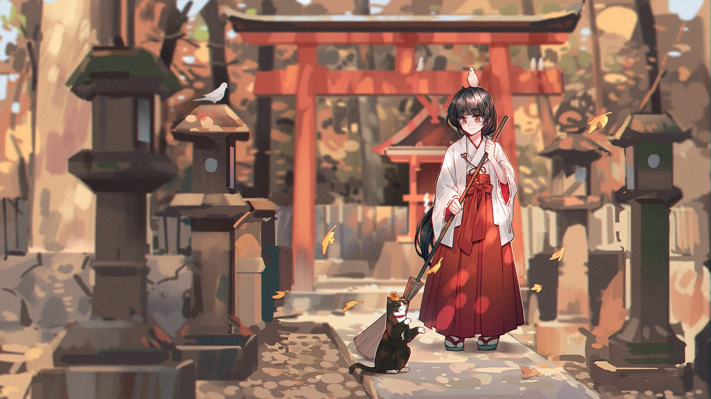

Historia sobre Manga

El origen del manga como forma de contar historias y definición de la palabra, comenzó durante la segunda mitad del siglo diecinueve y primeros del veinte 1868-1912, en pleno periodo de apertura cultural y económica bajo el mandato del emperador Mutsuhito.La palabra manga (漫画) está compuesta por dos kanji; man (informal) y ga (dibujo). Literalmente se traduce por dibujos caprichosos o garabatos. Se acuñó este término para definir el arte surgido por la unión del estilo gráfico de la pintura tradicional japonesa y las historietas (cómics) de estilo occidental.
Actualmente, palabra manga se usa en Japón para referirse a “historietas”, de forma general. Fuera de Japón, esta palabra se emplea más concretamente para referirse al estilo japonés de dibujar y contar historias.Los primeros grabados que muestran un atisbo de estética manga, lo encontramos en la obra Chōjugiga, realizada a mediados del siglo XIII. Son una serie de dibujos con carga satírica representando animales. Están atribuidos a Toba no Sōjō, personaje que vivió en los siglos XI-XII. Sólo se conservan algunos ejemplares en blanco y negro, sin embargo, se ve en ellos una primitiva línea representativa que posteriormente iría evolucionando al manga.